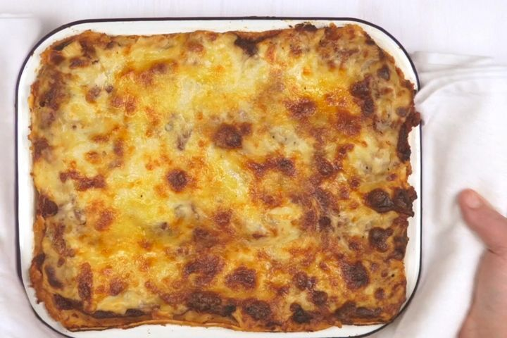

Home
Lasagna

Description
With layer upon layer of rich tomatoey beef mince, pasta, and creamy cheesy sauce, it’s hard to find anything to
dislike about lasagne. There are numerous reasons why this particular lasagne recipe has become so beloved. The
addition of wine in the red sauce makes it super flavourful, while the layering of pasta with mozzarella makes for
the perfect cheese pull. But if we were to pick one thing that makes this lasagne recipe stand out above all others,
it’s the luscious bechamel sauce. A good home-made bechamel base takes time - but it’s worth it for the extra depth
of flavour you won’t find with many lasagnes. The best thing about rich Italian ragu and lasagne is that it tastes
even better the next day, even when heated in the microwave. This lasagne recipe is also freezer-friendly and will
keep for up to 3 months in an airtight container. You can actually wrap individual portions in freezer wrap, ready
to take out for a quick and easy dinner-for-one. This lasagne recipe is an absolute favourite among the taste team
(hence the name!), but don’t just take my word for it - our members are raving about it too. One reviewer even said
she made it for her husband “who grew up eating lasagna his Italian mother cooked him” (no pressure!) and “he
thoroughly enjoyed” it. With a 4.5-star rating and multiple rave reviews, it’s safe to say this recipe is now an
adopted Aussie classic.
Ingredients
- 2 tsp olive oil
- 1 brown onion, halved, finely chopped
- 2 garlic cloves, crushed
- 750g Coles beef mince regular
- 2 x 400g cans Italian diced tomatoes
- 125ml (1/2 cup) dry red wine
- 55g (1/4 cup) tomato paste
- Salt & freshly ground black pepper
- Olive oil, extra, to grease
- 4 fresh lasagne sheets
- 55g (1/2 cup) coarsely grated Devondale Mozzarella Cheese Block (500g)
- Mixed salad leaves, to serve
Steps
- Heat the oil in a large frying pan over medium heat. Add the onion and garlic and cook, stirring, for 5 minutes
or until onion softens. Add the mince and cook, stirring with a wooden spoon to break up any lumps, for 5 minutes
or until mince changes colour. Add the tomato, wine and tomato paste, and bring to the boil. Reduce heat to low.
Simmer, uncovered, stirring occasionally, for 30 minutes or until sauce thickens slightly. Remove from heat. Taste
and season with salt and pepper.
- Meanwhile, to make the cheese sauce, combine the milk, onion, parsley stalks, peppercorns, cloves and bay leaves
in a medium saucepan and bring to a simmer over medium heat. Remove from heat and set aside for 15 minutes to
infuse.
- Strain the milk mixture through a fine sieve into a large jug. Discard solids.
- Melt the butter in a large saucepan over medium-high heat until foaming. Add the flour and cook, stirring, for
1-2 minutes or until mixture bubbles and begins to come away from the side of the pan. Remove from heat.
- Gradually pour in half the milk, whisking constantly with a balloon whisk, until mixture is smooth. Gradually
add the remaining milk, whisking until smooth and combined.
- Place saucepan over medium-high heat and bring to the boil, stirring constantly with a wooden spoon, for 5
minutes or until sauce thickens and coats the back of the spoon. Remove from heat. Add the parmesan and stir until
cheese melts. Taste and season with nutmeg, salt and white pepper.
- Preheat oven to 180°C. Brush a rectangular 3L (12 cup) capacity ovenproof dish with oil to lightly grease.
Spread one-quarter of the bechamel sauce over the base of the prepared dish. Arrange 1 lasagne sheet over the
sauce. Top with one-third of the mince mixture and one-third of the remaining bechamel sauce. Continue layering
with the remaining lasagne sheets, mince mixture and bechamel, finishing with a layer of bechamel. Sprinkle with
mozzarella. Place on a baking tray. Bake in preheated oven for 40 minutes or until cheese melts, is golden brown,
and the edges are bubbling. Remove from oven and set aside for 10 minutes to set.
- Cut the lasagne into 8 portions and serve with mixed salad leaves.